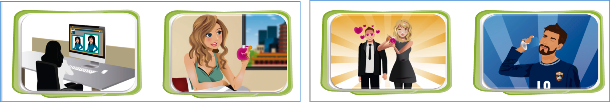

In today’s world, mass media is everywhere: television, movies, newspapers, social media,
advertisements, and even video games. Because of this, it is essential to develop two key skills:
critical thinking and media literacy. These skills allow us not
only
to consume media but also to question, analyze, and understand the hidden messages behind what we
see and hear.
Critical thinking is the ability to analyze information using observation,
experience,
reasoning, and logic. It goes beyond simply understanding the surface of a message. For example,
instead of just
believing a news story, a critical thinker might ask: Who wrote this article? What evidence supports
it?
Could there be another perspective? This mindset helps us identify implicit intentions, values, and
ideologies within media texts.
Media literacy is the practical application of critical thinking to media. It means
“reading” media texts carefully to find underlying meanings. A media text is not only something
written but also
advertisements, songs, websites, or even billboards. For example:
- An advertisement for perfume may use emotional appeal, suggesting that wearing
it will make someone feel luxurious.
- Another ad might use celebrity endorsement, where a famous person promotes the
product to influence consumers.
- A commercial may apply generalization, implying that “everyone uses this
product,” to persuade viewers.

These strategies show how media is designed to attract attention, persuade, or sell, and media
literacy
gives us the tools to recognize these techniques instead of being unconsciously manipulated by them.
Another important point is that objectivity in media does not exist. Every text or
story is presented from the perspective of its producer. Even documentaries or news reports are
influenced by the values,
culture, and interests of the creators. That is why asking questions like “What is the author’s
purpose?” or “How might different audiences interpret this message?” is crucial.
For example, a movie based on “true events” is still a version of the story shaped by the director’s
choices. Likewise, two different newspapers may report the same political event but present it with
very
different tones, depending on their ideology.
In conclusion, critical thinking and media literacy are not only academic concepts but essential
life
skills. They empower us to interpret messages independently, resist manipulation, and form our own
opinions. In a world full of media influences, these skills help us make informed decisions and
become
more responsible consumers of information.